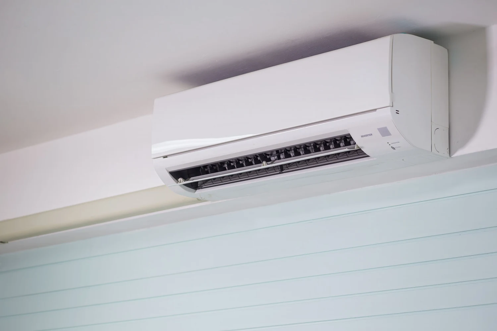
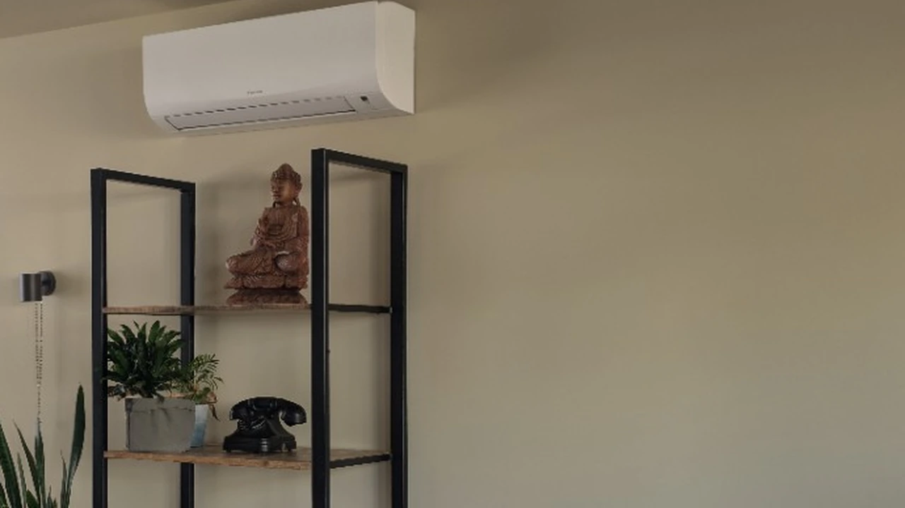
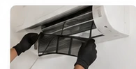
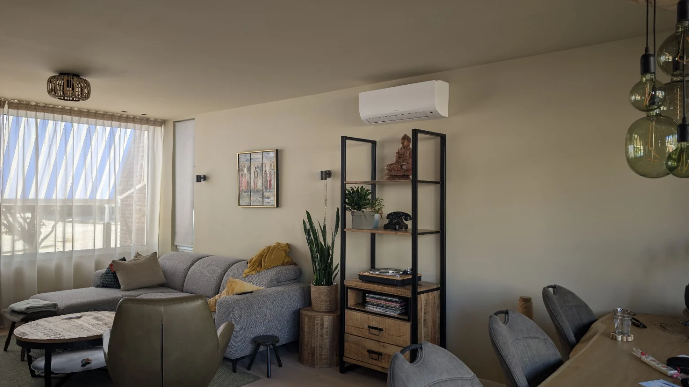

Vakkundige installatie
Zorgvuldig gemonteerd met aandacht voor detail.
Comfort in huis, het hele jaar door
KTS-Klimaat verzorgt airco-installatie, vervanging, onderhoud en advies voor woningen en bedrijfsruimtes door heel Nederland.
Zorgvuldig gemonteerd met aandacht voor detail.
Een passende oplossing voor jouw ruimte en wensen.
Schoon werken en alles verzorgd achterlaten.
Wat we doen

Een nieuwe airco laten installeren voor comfortabel koelen én verwarmen.
Meer over airco installeren →
Een verouderd systeem vervangen door een moderne en efficiënte oplossing.
Meer over airco vervangen →
Voor een gezond binnenklimaat, betrouwbare werking en een langere levensduur.
Meer over airco onderhoud →
Hulp bij problemen, foutmeldingen of een airco die niet goed meer werkt.
Hulp bij een aircostoring →Waarom KTS-Klimaat?
Duidelijke afspraken en een nette uitvoering.
Oog voor detail, zowel binnen als buiten.
Korte lijnen en advies dat past bij jouw situatie.
KTS-Klimaat voert werkzaamheden uit door heel Nederland.
Van aanvraag tot installatie
Vertel ons kort wat je zoekt.
We bespreken de ruimte en jouw wensen.
Je ontvangt een duidelijke vrijblijvende offerte.
Na akkoord plannen we de werkzaamheden in.
Veelgestelde vragen
Een paar antwoorden op vragen die vaak spelen bij een nieuwe airco, onderhoud of service.
Andere vraag? Neem contact op →Veel moderne split-airco’s kunnen zowel koelen als verwarmen. Welke oplossing passend is, hangt af van de ruimte, het gebruik en het gekozen systeem.
Dat hangt onder andere af van de grootte en ligging van de ruimte, isolatie en het gewenste gebruik. Daarom kijken we liever naar jouw situatie dan naar één standaardadvies.
Ja. KTS-Klimaat is landelijk werkzaam. Vermeld je woonplaats bij de aanvraag, zodat we direct rekening kunnen houden met locatie en planning.
De onderhoudsbehoefte hangt af van het systeem, gebruik en de omgeving. Regelmatige controle en reiniging helpen om de installatie schoon en betrouwbaar te houden.
Ja. Je kunt vrijblijvend je situatie doorgeven. Op basis daarvan bespreken we welke vervolgstap logisch is.
Vul het offerteformulier in met je contactgegevens, woonplaats en een korte omschrijving. KTS-Klimaat neemt daarna persoonlijk contact met je op.
Vrijblijvend aanvragen
Vul het formulier in met je gegevens en een korte omschrijving van je aanvraag. We nemen daarna persoonlijk contact met je op.